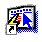
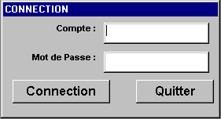
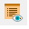
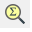
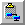
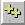

|
Starting with... |
|
 |
|
| Subject: General presentation of the
GENI's environment, icons description, keyboard shortcuts ... |
||
Connection, how to start GENI |
||
| On Microsoft Windows' desktop or in the start
menu, click on GENI's icon :  The application opens and presents requiring you to input your account (Compte) and GENI's password (Mot de Passe) (Attention, this information is different from your login and password delivered to connect to Structal's network) You can go from one field to an other by pressing either on Return key, or on Tab key.  Validate your input by pressing on Return or by clicking on Connection. In the event of error, or if you are not recognized by the system, a message will popup, contact the administrator in the event of connection problem connection. |
||
Home page |
||
The screen is divided in several
parts, from top to bottom :
|
||
Icons |
||
| Before 2019 | 2019 | |
 |
Validate changes (F5) This button allows you to validate changes made since the last save. It's only after pressing F5 that changes will be saved and available for other users. |
|
 |
 |
Values list (F4) This button pop up the list of values associated with current field. If no values are available, the system will shows you an error message. By convention : Blue or grey field are linked to a value list. |
| Print active windows (Ctrl
+ p) This button allows you to print a copy of the current windows. |
||
 |
Export to Excel This button allows you to output data from the current listing to Microsoft Excel |
|
 |
Undo This button allows you to undo every changes made since the last time you pressed F5 Attention, This function is not always available |
|
 |
Text Cut (Ctrl + x) This button allows you to cut the current selection and to paste it in Window's clipboard. |
|
 |
Text Copy (Ctrl + c) This button allows you to copy the current selection and to paste it in Window's clipboard |
|
 |
Text Paste (Ctrl + v) This button allows you to paste the selection that has been cut or copied |
|
 |
Make a request (F2) This button allows you to create a request on the current listing. |
|
 |
Run (Shift + F2) This button allows you to run the request corresponding to the criteria you input previously. |
|
 |
 |
Count results (Ctrl + F2) This button gives you how many result you will have after running the request. |
 |
Insert (F7) This button allows you to insert a blank line just below the current record. |
|
 |
 |
Object copy This button allows you to copy an object in GEPIX clipboard. A GEPIX object is a record and eventually every information linked to it : By example when you copy an item, you will copy the item, with its properties, options, route sheet and Bill of Materials |
|
Object paste (in
2019 - copy and paste) This button allows you to paste GEPIX's clipboard |
|
| Delete (Shift + F12) This button allows you to delete from the database the current record. |
||
 |
Show detailed record This button allows you to access directly to a window allowing you to show/modify information concerning the current field. |
|
| Function keys Allows you to see function keys |
||
 |
Help (F1) This button call the help file concerning the current windows |
|
 |
Show Preferences This buttons allows you to modify columns order, size. |
|
 |
 |
Enlarge Preferences This button allows you to see every fields/columns used in the current list. |
 |
Close window/request (F3 or
Alt + F4) This button allows you to close the current window or to quit the query mode. |
|
 |
EDM - Electronics Data Management (GED - Gestion Electronique de Documents) | |
Function keys / Keyboard shortcuts |
||
| F1 | Help | |
| F2 | Create a new request | |
| Shift + F2 | Run request | |
| Ctrl + F2 | Count results of the request | |
| F3 | Quit without saving changes | |
| F4 | Value list | |
| F5 | Save changes | |
| Shift + F4 | Blank field | |
| Shift + F12 | Delete record | |
| Shift + F7 | Duplicate field | |
| F12 | Duplicate record | |
| Ctrl + E | Open the editor - This might help you to see hidden lines | |
| F7 | Create a new record | |
| Bas ou Shift + Bas |
Next record | |
| Haut ou Shift + Haut |
Previous record | |
| Ctrl + P | Print current window | |
| PG. Suiv | Got to next page (Records) | |
| PG. Prec | Got to previous page (Records) | |
| F11 | List functions | |
| Ctrl + 0 | ||
| Ctrl + 1, etc... | ||
| Rappel : the menu Touches
correspond to the buttons |
||
Windows'shortcuts |
|
| Ctrl + c | Copy |
| Ctrl + x | Cut |
| Ctrl + v | Paste |
| Prn. Screen | Print scrint (copy to clipboard) Very useful to copy the current screen and paste it to Microsoft Word. |
|